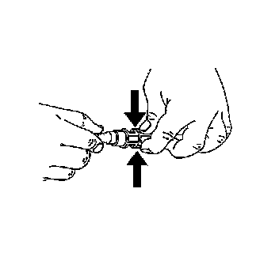

Auxiliary Heater Pipe Replacement
AUXILIARY HEATER PIPE REPLACEMENT
REMOVAL PROCEDURE

1. Drain the cooling system. Refer to Draining and Filling Cooling System (Vac-N-Fill).
2. Squeeze the plastic retainer tabs on the inlet hose.

3. Pull the connection apart.
4. Squeeze the plastic retainer tabs on the outlet hose.
5. Pull the connection apart.
6. Remove the auxiliary heater pipes (1, 2) from the heater inlet and outlet tees (3, 4) at the HVAC module.
7. Remove the vehicle right assist step.
8. Remove the right rear wheelhouse panel.
9. Remove the right front wheelhouse panel.
10. Remove the auxiliary heater pipes (2, 3) from the auxiliary heater core.
11. Remove the heater/A/C tubes retaining nut (4) from the stud (1) at the frame (6).
12. Remove the auxiliary heater pipes (2) from the clamps (5).
13. Remove the auxiliary heater pipes from the vehicle.
INSTALLATION PROCEDURE
IMPORTANT: The replacement A/C and heater pipes are shipped in two sections and spliced together upon installation. Refer to Auxiliary Heater and Air Conditioning Pipe Repair. Procedures
1. Install the auxiliary heater pipes to the vehicle.
2. Install the auxiliary heater pipes (2) to the clamps (5).
3. NOTE: Refer to Fastener Notice.
Install the heater/A/C tubes retaining nut (4) to the stud (1) at the frame (6).
Tighten the nut to 7 N.m (62 lb in).
4. Install the auxiliary heater pipes (2, 3) to the auxiliary heater core.
5. Install the right front wheelhouse panel.
6. Install the right rear wheelhouse panel.
7. Install the vehicle right assist step.
8. Install the auxiliary heater pipes (1, 2) to the heater inlet and outlet tees (3, 4).

9. Connect the outlet heater hose to the heater core.
10. Connect the inlet heater hose to the heater core.
11. Fill the cooling system. Refer to Draining and Filling Cooling System (Vac-N-Fill).